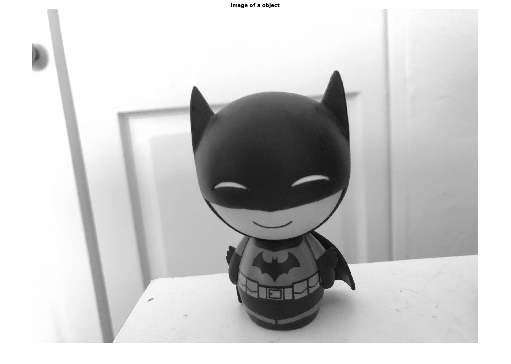
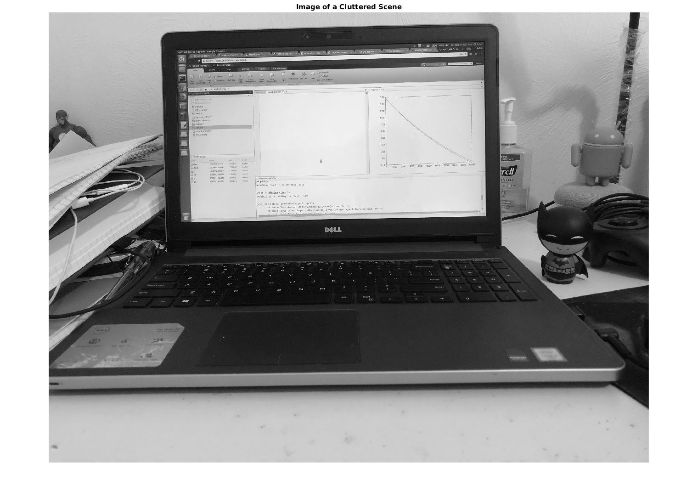
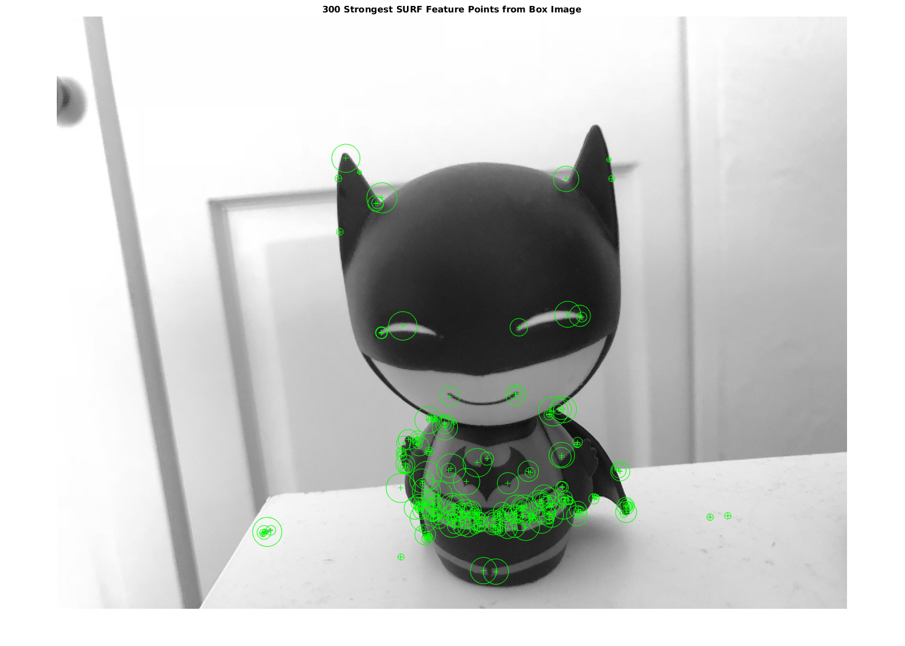
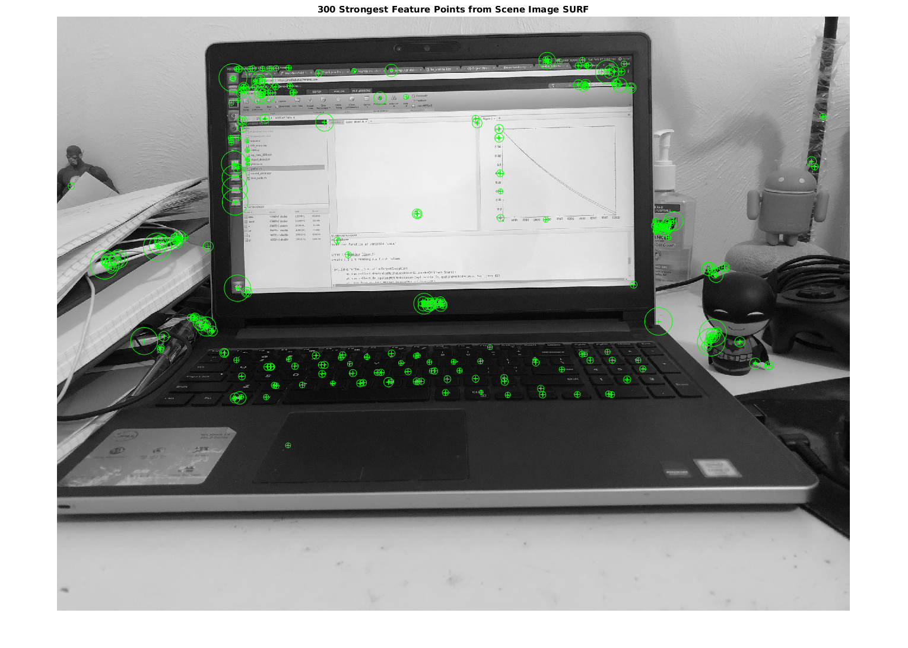
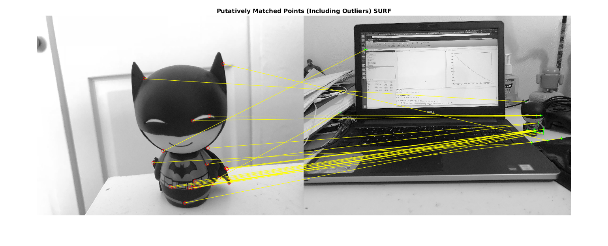
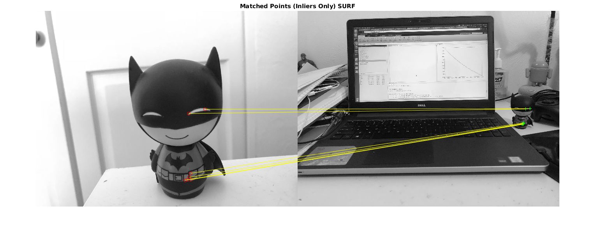
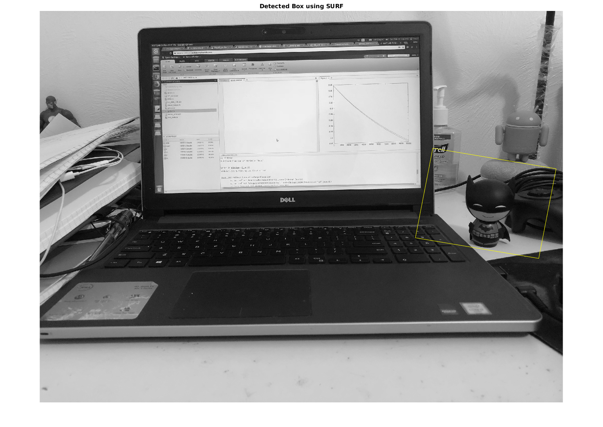

Contents
clc;
clear;
close all;
Initial pre-processing
Read the object image
boxImage = imread('object.JPG'); boxImage = imrotate(boxImage,180); boxImage = rgb2gray(boxImage); figure; imshow(boxImage); title('Image of a object'); % Read the scene image sceneImage = imread('desk.JPG'); sceneImage = rgb2gray(sceneImage); figure; imshow(sceneImage); title('Image of a Cluttered Scene');
Warning: Image is too big to fit on screen; displaying at 33% Warning: Image is too big to fit on screen; displaying at 33% 
Implementation of SURF based feature detection and object detection
Detect the featrure points using SURF feature detection
boxPoints = detectSURFFeatures(boxImage); scenePoints = detectSURFFeatures(sceneImage); figure; imshow(sceneImage); % Visualizing the strongest points in the object image figure; imshow(boxImage); title('300 Strongest SURF Feature Points from Box Image'); hold on; plot(selectStrongest(boxPoints, 300)); % Visualizing the strongest points in the target scene image figure; imshow(sceneImage); title('300 Strongest Feature Points from Scene Image SURF'); hold on; plot(selectStrongest(scenePoints, 300)); % extracting feature descriptors at interest points in both images [boxFeatures, boxPoints] = extractFeatures(boxImage, boxPoints); [sceneFeatures, scenePoints] = extractFeatures(sceneImage, scenePoints); % Matching the features using the descriptors boxPairs = matchFeatures(boxFeatures, sceneFeatures); % Display the matched features matchedBoxPoints = boxPoints(boxPairs(:, 1), :); matchedScenePoints = scenePoints(boxPairs(:, 2), :); figure; showMatchedFeatures(boxImage, sceneImage, matchedBoxPoints, ... matchedScenePoints, 'montage'); title('Putatively Matched Points (Including Outliers) SURF'); hold on % Locating the object in the scene [tform, inlierBoxPoints, inlierScenePoints] = ... estimateGeometricTransform(matchedBoxPoints, matchedScenePoints, 'affine'); % Displaying the matched points after removing the outliers figure; showMatchedFeatures(boxImage, sceneImage, inlierBoxPoints, ... inlierScenePoints, 'montage'); title('Matched Points (Inliers Only) SURF'); %Drawing bounding box on the reference image boxPolygon = [1, 1;... % top-left size(boxImage, 2), 1;... % top-right size(boxImage, 2), size(boxImage, 1);... % bottom-right 1, size(boxImage, 1);... % bottom-left 1, 1]; % top-left again to close the polygon %Transforming polygon i9n the coordinate system of the transformed image newBoxPolygon = transformPointsForward(tform, boxPolygon); % Displaying the detectd object figure; imshow(sceneImage); hold on; line(newBoxPolygon(:, 1), newBoxPolygon(:, 2), 'Color', 'y'); title('Detected Box using SURF');
Warning: Image is too big to fit on screen; displaying at 33% Warning: Image is too big to fit on screen; displaying at 33% Warning: Image is too big to fit on screen; displaying at 33% Warning: Image is too big to fit on screen; displaying at 17% Warning: Image is too big to fit on screen; displaying at 17% Warning: Image is too big to fit on screen; displaying at 33%    